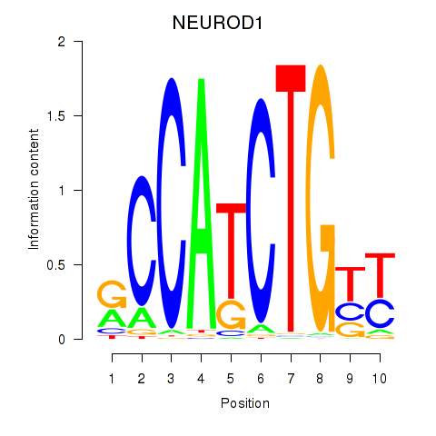
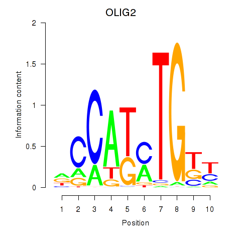
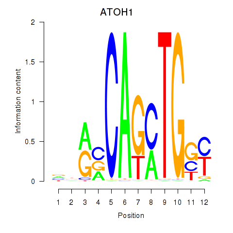

Motif ID: OLIG2_NEUROD1_ATOH1
Z-value: 0.564



Transcription factors associated with OLIG2_NEUROD1_ATOH1:
| Gene Symbol | Entrez ID | Gene Name |
|---|---|---|
| ATOH1 | ENSG00000172238.3 | ATOH1 |
| NEUROD1 | ENSG00000162992.3 | NEUROD1 |
| OLIG2 | ENSG00000205927.4 | OLIG2 |
![](http://string-db.org/api/image/network?network_flavor=evidence&limit=0&species=9606&caller_identity=MARA&identifiers=9606.ENSP00000301873%0D9606.ENSP00000358154%0D9606.ENSP00000314004%0D9606.ENSP00000345468%0D9606.ENSP00000313384%0D9606.ENSP00000258526%0D9606.ENSP00000263925%0D9606.ENSP00000281631%0D9606.ENSP00000465978%0D9606.ENSP00000325519%0D9606.ENSP00000261692%0D9606.ENSP00000374443%0D9606.ENSP00000367911%0D9606.ENSP00000349588%0D9606.ENSP00000306100%0D9606.ENSP00000356182%0D9606.ENSP00000345179%0D9606.ENSP00000312129%0D9606.ENSP00000421280%0D9606.ENSP00000262032%0D9606.ENSP00000329384%0D9606.ENSP00000301454%0D9606.ENSP00000376921%0D9606.ENSP00000295902%0D9606.ENSP00000358866%0D9606.ENSP00000262430%0D9606.ENSP00000346560%0D9606.ENSP00000346671%0D9606.ENSP00000363939%0D9606.ENSP00000311427%0D9606.ENSP00000385450%0D9606.ENSP00000331019%0D9606.ENSP00000351407%0D9606.ENSP00000301050%0D9606.ENSP00000305355%0D9606.ENSP00000375892%0D9606.ENSP00000226413%0D9606.ENSP00000377409%0D9606.ENSP00000265316%0D9606.ENSP00000444823%0D9606.ENSP00000356560%0D9606.ENSP00000342278%0D9606.ENSP00000296755%0D9606.ENSP00000338967%0D9606.ENSP00000411198%0D9606.ENSP00000377547%0D9606.ENSP00000310335%0D9606.ENSP00000225899%0D9606.ENSP00000353362%0D9606.ENSP00000263805%0D9606.ENSP00000406162%0D9606.ENSP00000287152%0D9606.ENSP00000301464%0D9606.ENSP00000466775%0D9606.ENSP00000470698%0D9606.ENSP00000216416%0D9606.ENSP00000300406%0D9606.ENSP00000325239%0D9606.ENSP00000371398%0D9606.ENSP00000332668%0D9606.ENSP00000248633%0D9606.ENSP00000440243%0D9606.ENSP00000301242%0D9606.ENSP00000354923%0D9606.ENSP00000302935%0D9606.ENSP00000284476%0D9606.ENSP00000413418%0D9606.ENSP00000287878%0D9606.ENSP00000378996%0D9606.ENSP00000379290%0D9606.ENSP00000289749%0D9606.ENSP00000375783%0D9606.ENSP00000452571%0D9606.ENSP00000335074%0D9606.ENSP00000009180%0D9606.ENSP00000233607%0D9606.ENSP00000356086%0D9606.ENSP00000285381%0D9606.ENSP00000388942%0D9606.ENSP00000316284%0D9606.ENSP00000419101%0D9606.ENSP00000410396%0D9606.ENSP00000274897%0D9606.ENSP00000429803%0D9606.ENSP00000327585%0D9606.ENSP00000238789%0D9606.ENSP00000334068%0D9606.ENSP00000385632%0D9606.ENSP00000355500%0D9606.ENSP00000352252%0D9606.ENSP00000319897%0D9606.ENSP00000261978%0D9606.ENSP00000272643%0D9606.ENSP00000355022%0D9606.ENSP00000367219%0D9606.ENSP00000340900%0D9606.ENSP00000384288%0D9606.ENSP00000356286%0D9606.ENSP00000350474%0D9606.ENSP00000386137%0D9606.ENSP00000318373)
{kind=link}
{kind=link}
{kind=link}
{kind=link}
Top targets:
Gene overrepresentation in biological_process category:
| Log-likelihood per target | Total log-likelihood | Term | Description |
|---|---|---|---|
| 0.1 | 0.7 | GO:0036371 | protein localization to T-tubule(GO:0036371) |
| 0.1 | 0.3 | GO:0035408 | histone H3-T6 phosphorylation(GO:0035408) |
| 0.1 | 0.2 | GO:0060152 | peroxisome localization(GO:0060151) microtubule-based peroxisome localization(GO:0060152) |
| 0.1 | 0.3 | GO:0036115 | fatty-acyl-CoA catabolic process(GO:0036115) |
| 0.0 | 0.3 | GO:0018032 | protein amidation(GO:0018032) |
| 0.0 | 0.1 | GO:0008057 | eye pigment granule organization(GO:0008057) |
| 0.0 | 0.1 | GO:0033364 | mast cell secretory granule organization(GO:0033364) |
| 0.0 | 0.2 | GO:0038098 | sequestering of BMP from receptor via BMP binding(GO:0038098) |
| 0.0 | 0.2 | GO:1904347 | positive regulation of eating behavior(GO:1904000) regulation of small intestine smooth muscle contraction(GO:1904347) positive regulation of small intestine smooth muscle contraction(GO:1904349) small intestine smooth muscle contraction(GO:1990770) |
| 0.0 | 0.1 | GO:1905000 | regulation of membrane repolarization during atrial cardiac muscle cell action potential(GO:1905000) |
| 0.0 | 0.1 | GO:0070563 | negative regulation of vitamin D receptor signaling pathway(GO:0070563) |
| 0.0 | 0.1 | GO:0046416 | D-amino acid metabolic process(GO:0046416) |
| 0.0 | 0.1 | GO:0055073 | cadmium ion homeostasis(GO:0055073) lysosomal membrane organization(GO:0097212) negative regulation of hydrogen peroxide catabolic process(GO:2000296) regulation of oxygen metabolic process(GO:2000374) |
| 0.0 | 0.1 | GO:0061073 | ciliary body morphogenesis(GO:0061073) |
| 0.0 | 0.1 | GO:0014734 | skeletal muscle hypertrophy(GO:0014734) |
| 0.0 | 0.1 | GO:2000097 | regulation of smooth muscle cell-matrix adhesion(GO:2000097) |
| 0.0 | 0.1 | GO:0034970 | histone H3-R2 methylation(GO:0034970) |
| 0.0 | 0.2 | GO:0018377 | protein myristoylation(GO:0018377) |
| 0.0 | 0.1 | GO:0035283 | rhombomere 5 development(GO:0021571) central nervous system segmentation(GO:0035283) brain segmentation(GO:0035284) |
| 0.0 | 0.1 | GO:0032972 | regulation of muscle filament sliding speed(GO:0032972) |
| 0.0 | 0.1 | GO:0042137 | sequestering of neurotransmitter(GO:0042137) |
| 0.0 | 0.1 | GO:0072061 | inner medullary collecting duct development(GO:0072061) |
| 0.0 | 0.1 | GO:0097211 | response to gonadotropin-releasing hormone(GO:0097210) cellular response to gonadotropin-releasing hormone(GO:0097211) |
| 0.0 | 0.1 | GO:0019072 | viral genome packaging(GO:0019072) viral RNA genome packaging(GO:0019074) |
| 0.0 | 0.1 | GO:1904428 | negative regulation of tubulin deacetylation(GO:1904428) |
| 0.0 | 0.1 | GO:0007538 | primary sex determination(GO:0007538) |
| 0.0 | 0.1 | GO:0060040 | retinal bipolar neuron differentiation(GO:0060040) |
| 0.0 | 0.4 | GO:0035414 | negative regulation of catenin import into nucleus(GO:0035414) |
| 0.0 | 0.1 | GO:0043328 | protein targeting to vacuole involved in ubiquitin-dependent protein catabolic process via the multivesicular body sorting pathway(GO:0043328) |
| 0.0 | 0.1 | GO:0015842 | aminergic neurotransmitter loading into synaptic vesicle(GO:0015842) |
| 0.0 | 0.1 | GO:0000379 | tRNA-type intron splice site recognition and cleavage(GO:0000379) |
| 0.0 | 0.1 | GO:0046985 | positive regulation of hemoglobin biosynthetic process(GO:0046985) |
| 0.0 | 0.1 | GO:1903347 | negative regulation of bicellular tight junction assembly(GO:1903347) |
| 0.0 | 0.1 | GO:0097473 | cellular response to high light intensity(GO:0071486) retinal rod cell apoptotic process(GO:0097473) |
| 0.0 | 0.1 | GO:0061739 | protein lipidation involved in autophagosome assembly(GO:0061739) |
| 0.0 | 0.0 | GO:0030950 | establishment or maintenance of actin cytoskeleton polarity(GO:0030950) |
| 0.0 | 0.1 | GO:1902045 | negative regulation of Fas signaling pathway(GO:1902045) |
| 0.0 | 0.1 | GO:0044501 | modulation of signal transduction in other organism(GO:0044501) modulation by symbiont of host signal transduction pathway(GO:0052027) modulation of signal transduction in other organism involved in symbiotic interaction(GO:0052250) modulation by symbiont of host I-kappaB kinase/NF-kappaB cascade(GO:0085032) |
| 0.0 | 0.1 | GO:0015670 | carbon dioxide transport(GO:0015670) |
| 0.0 | 0.1 | GO:0061364 | negative regulation of negative chemotaxis(GO:0050925) apoptotic process involved in luteolysis(GO:0061364) |
| 0.0 | 0.2 | GO:0009414 | response to water deprivation(GO:0009414) |
| 0.0 | 0.1 | GO:0002949 | tRNA threonylcarbamoyladenosine modification(GO:0002949) |
| 0.0 | 0.1 | GO:0002032 | desensitization of G-protein coupled receptor protein signaling pathway by arrestin(GO:0002032) |
| 0.0 | 0.2 | GO:1902951 | negative regulation of dendritic spine maintenance(GO:1902951) |
| 0.0 | 0.1 | GO:0034334 | adherens junction maintenance(GO:0034334) |
| 0.0 | 0.1 | GO:0014043 | negative regulation of neuron maturation(GO:0014043) |
| 0.0 | 0.0 | GO:1902938 | regulation of intracellular calcium activated chloride channel activity(GO:1902938) |
| 0.0 | 0.1 | GO:0015712 | hexose phosphate transport(GO:0015712) glucose-6-phosphate transport(GO:0015760) |
| 0.0 | 0.2 | GO:0046886 | positive regulation of hormone biosynthetic process(GO:0046886) |
| 0.0 | 0.1 | GO:0043324 | eye pigment biosynthetic process(GO:0006726) eye pigment metabolic process(GO:0042441) pigment metabolic process involved in developmental pigmentation(GO:0043324) pigment metabolic process involved in pigmentation(GO:0043474) |
| 0.0 | 0.1 | GO:0033123 | positive regulation of cyclic nucleotide catabolic process(GO:0030807) positive regulation of cAMP catabolic process(GO:0030822) positive regulation of purine nucleotide catabolic process(GO:0033123) |
| 0.0 | 0.0 | GO:0060545 | CD8-positive, alpha-beta cytotoxic T cell extravasation(GO:0035698) positive regulation of necroptotic process(GO:0060545) regulation of CD8-positive, alpha-beta cytotoxic T cell extravasation(GO:2000452) |
| 0.0 | 0.1 | GO:0002361 | CD4-positive, CD25-positive, alpha-beta regulatory T cell differentiation(GO:0002361) |
| 0.0 | 0.1 | GO:0035511 | oxidative DNA demethylation(GO:0035511) |
| 0.0 | 0.0 | GO:0001869 | regulation of complement activation, lectin pathway(GO:0001868) negative regulation of complement activation, lectin pathway(GO:0001869) |
| 0.0 | 0.0 | GO:0045083 | negative regulation of interleukin-12 biosynthetic process(GO:0045083) |
| 0.0 | 0.0 | GO:2000612 | thyroid-stimulating hormone secretion(GO:0070460) regulation of thyroid-stimulating hormone secretion(GO:2000612) |
| 0.0 | 0.1 | GO:0048496 | maintenance of organ identity(GO:0048496) |
| 0.0 | 0.1 | GO:2000639 | regulation of SREBP signaling pathway(GO:2000638) negative regulation of SREBP signaling pathway(GO:2000639) |
Gene overrepresentation in cellular_component category:
| Log-likelihood per target | Total log-likelihood | Term | Description |
|---|---|---|---|
| 0.0 | 0.1 | GO:0000814 | ESCRT II complex(GO:0000814) |
| 0.0 | 0.1 | GO:0031523 | Myb complex(GO:0031523) |
| 0.0 | 0.1 | GO:0097450 | astrocyte end-foot(GO:0097450) |
| 0.0 | 0.1 | GO:0002139 | stereocilia coupling link(GO:0002139) |
| 0.0 | 0.3 | GO:0097512 | cardiac myofibril(GO:0097512) |
| 0.0 | 0.3 | GO:1990454 | L-type voltage-gated calcium channel complex(GO:1990454) |
| 0.0 | 0.1 | GO:0070436 | Grb2-EGFR complex(GO:0070436) |
| 0.0 | 0.1 | GO:0097129 | cyclin D2-CDK4 complex(GO:0097129) |
| 0.0 | 0.1 | GO:0000214 | tRNA-intron endonuclease complex(GO:0000214) |
| 0.0 | 0.1 | GO:0030121 | AP-1 adaptor complex(GO:0030121) |
| 0.0 | 0.1 | GO:0097486 | alveolar lamellar body(GO:0097208) multivesicular body lumen(GO:0097486) |
| 0.0 | 0.0 | GO:1990745 | EARP complex(GO:1990745) |
| 0.0 | 0.6 | GO:0043034 | costamere(GO:0043034) |
Gene overrepresentation in molecular_function category:
| Log-likelihood per target | Total log-likelihood | Term | Description |
|---|---|---|---|
| 0.1 | 0.3 | GO:0035403 | histone kinase activity (H3-T6 specific)(GO:0035403) |
| 0.1 | 0.2 | GO:0045518 | interleukin-22 receptor binding(GO:0045518) |
| 0.0 | 0.1 | GO:0004968 | gonadotropin-releasing hormone receptor activity(GO:0004968) |
| 0.0 | 0.1 | GO:0033867 | Fas-activated serine/threonine kinase activity(GO:0033867) |
| 0.0 | 0.3 | GO:0004504 | peptidylglycine monooxygenase activity(GO:0004504) peptidylamidoglycolate lyase activity(GO:0004598) |
| 0.0 | 0.2 | GO:0004874 | aryl hydrocarbon receptor activity(GO:0004874) |
| 0.0 | 0.3 | GO:0030172 | troponin C binding(GO:0030172) |
| 0.0 | 0.1 | GO:0031768 | ghrelin receptor binding(GO:0031768) |
| 0.0 | 0.1 | GO:0015439 | heme-transporting ATPase activity(GO:0015439) |
| 0.0 | 0.3 | GO:0070097 | delta-catenin binding(GO:0070097) |
| 0.0 | 0.1 | GO:0098770 | FBXO family protein binding(GO:0098770) |
| 0.0 | 0.1 | GO:0031859 | platelet activating factor receptor binding(GO:0031859) |
| 0.0 | 0.1 | GO:0035514 | DNA demethylase activity(GO:0035514) |
| 0.0 | 0.1 | GO:0047275 | glucosaminylgalactosylglucosylceramide beta-galactosyltransferase activity(GO:0047275) |
| 0.0 | 0.2 | GO:0044020 | histone methyltransferase activity (H4-R3 specific)(GO:0044020) |
| 0.0 | 0.2 | GO:0001730 | 2'-5'-oligoadenylate synthetase activity(GO:0001730) |
| 0.0 | 0.1 | GO:0015526 | hexose phosphate transmembrane transporter activity(GO:0015119) organophosphate:inorganic phosphate antiporter activity(GO:0015315) hexose-phosphate:inorganic phosphate antiporter activity(GO:0015526) glucose 6-phosphate:inorganic phosphate antiporter activity(GO:0061513) |
| 0.0 | 0.1 | GO:0004991 | parathyroid hormone receptor activity(GO:0004991) |
| 0.0 | 0.1 | GO:0015222 | serotonin transmembrane transporter activity(GO:0015222) |
| 0.0 | 0.1 | GO:1901375 | acetylcholine transmembrane transporter activity(GO:0005277) acetate ester transmembrane transporter activity(GO:1901375) |
| 0.0 | 0.1 | GO:0003986 | acetyl-CoA hydrolase activity(GO:0003986) |
| 0.0 | 0.1 | GO:0034988 | Fc-gamma receptor I complex binding(GO:0034988) |
| 0.0 | 0.1 | GO:0070815 | peptidyl-lysine 5-dioxygenase activity(GO:0070815) |
| 0.0 | 0.2 | GO:0016015 | morphogen activity(GO:0016015) |
| 0.0 | 0.0 | GO:0005026 | transforming growth factor beta receptor activity, type II(GO:0005026) |
| 0.0 | 0.5 | GO:0016805 | dipeptidase activity(GO:0016805) |
| 0.0 | 0.1 | GO:0050115 | myosin-light-chain-phosphatase activity(GO:0050115) |
| 0.0 | 0.0 | GO:0052591 | sn-glycerol-3-phosphate:ubiquinone oxidoreductase activity(GO:0052590) sn-glycerol-3-phosphate:ubiquinone-8 oxidoreductase activity(GO:0052591) |
| 0.0 | 0.1 | GO:0043208 | glycosphingolipid binding(GO:0043208) |
| 0.0 | 0.0 | GO:0072544 | L-DOPA receptor activity(GO:0035643) L-DOPA binding(GO:0072544) |
| 0.0 | 0.1 | GO:0000213 | tRNA-intron endonuclease activity(GO:0000213) |
| 0.0 | 0.1 | GO:0042610 | CD8 receptor binding(GO:0042610) |
| 0.0 | 0.1 | GO:0060002 | plus-end directed microfilament motor activity(GO:0060002) |
Gene overrepresentation in C2:CP category:
| Log-likelihood per target | Total log-likelihood | Term | Description |
|---|---|---|---|
| 0.0 | 0.3 | PID_TCR_RAS_PATHWAY | Ras signaling in the CD4+ TCR pathway |
|
|
|
|